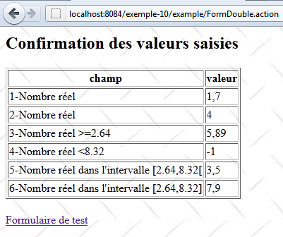
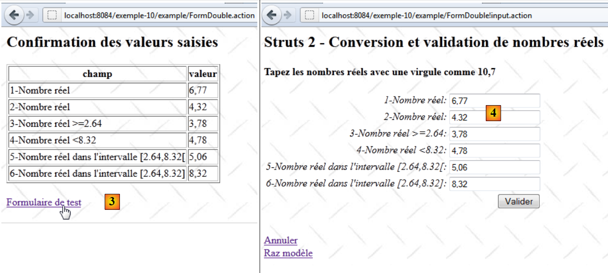
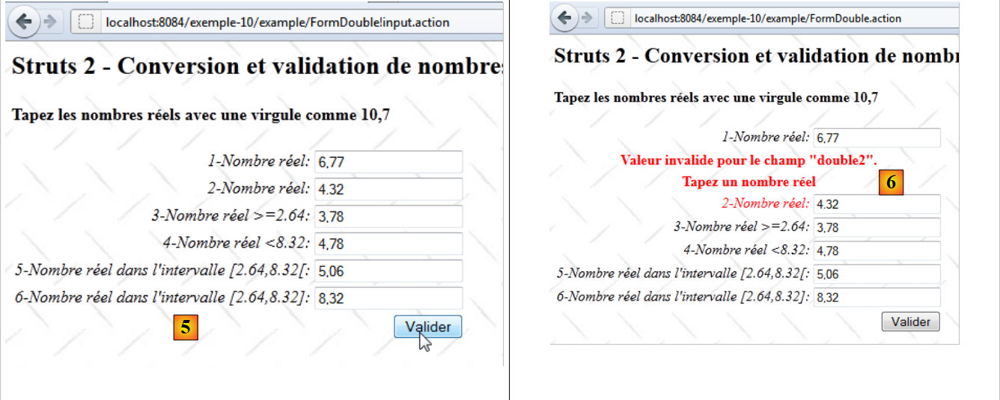

13. Example 10 – Conversion and validation of real numbers
The new application features real number input:
 |
- in [1], the input form
- in [2], the returned response
The application works similarly to the integer input, so we will only comment on the points that differ.
13.1. The NetBeans project
The NetBeans project is as follows:
 |
- in [1], the application views
- [Accueil.jsp]: the home page
- [FormDouble.jsp]: the input form
- [ConfirmationDouble.jsp]: the confirmation page
- in [2], the message file [messages.properties] and the main Struts configuration file
- in [3]:
- [FormDouble.java]: the action that displays and processes the form
- [FormDouble-validation.xml]: the validation rules for the [FormDouble] action. This file delegates these validations to the model using the method just discussed.
- [FormDoubleModel]: the model for the [FormDouble] action
- [FormDoubleModel-validation.xml]: the model's validation rules
- [FormDoubleModel.properties]: the model's message file
- [example.xml]: secondary Struts configuration file
13.2. Project configuration
The project is primarily configured by the following [example.xml] file:
<?xml version="1.0" encoding="UTF-8" ?>
<!DOCTYPE struts PUBLIC
"-//Apache Software Foundation//DTD Struts Configuration 2.0//EN"
"http://struts.apache.org/dtds/struts-2.0.dtd">
<struts>
<package name="example" namespace="/example" extends="struts-default">
<action name="Home">
<result name="success">/example/Home.jsp</result>
</action>
<action name="FormDouble" class="example.FormDouble">
<result name="input">/example/FormDouble.jsp</result>
<result name="cancel" type="redirect">/example/Home.jsp</result>
<result name="success">/example/ConfirmationFormDouble.jsp</result>
</action>
</package>
</struts>
It is similar to the one discussed for entering integers.
13.3. Message files
The [messages.properties] file is as follows:
Home.title=Home
Home.message=Struts 2 - Conversions and Validations
Home.FormDouble=Entering real numbers
Form.title=Conversions and validations
FormDouble.message=Struts 2 - Conversion and validation of real numbers
FormDouble.tip=Enter real numbers with a decimal point, such as 10.7
Form.submitText=Submit
Form.cancelText=Cancel
Form.clearModel=Clear model
Confirmation.title=Confirmation
Confirmation.message=Confirmation of entered values
Confirmation.field=field
Confirmation.value=value
Confirmation.link=Test form
xwork.default.invalid.fieldvalue=Invalid value for the "{0}" field.
The [FormDoubleModel.properties] file is as follows:
double.format={0,number}
double1.prompt=1-Number
double1.error=Enter a valid number
double2.prompt=2-Valid number
double2.error=Enter a valid number
double3.prompt=3-Real number >=2.64
double3.error=Enter a real number >=2.64
double4.prompt=4-Real number <8.32
double4.error=Enter a real number <8.32
double5.prompt=5-Real number in the interval [2.64, 8.32[
double5.error=Enter a real number in the range [2.64, 8.32[
double6.prompt=6-Real number in the range [2.64,8.32]
double6.error=Enter a real number in the range [2.64,8.32]
Line 1 plays an important role. We will come back to it later.
13.4. The input form
The [FormDouble.jsp] view is as follows:
<%@ page contentType="text/html; charset=UTF-8" pageEncoding="UTF-8"%>
<%@ taglib prefix="s" uri="/struts-tags" %>
<html>
<head>
<title><s:text name="Form.title"/></title>
<s:head/>
</head>
<body background="<s:url value="/resources/standard.jpg"/>">
<h2><s:text name="FormDouble.message"/></h2>
<h4><s:text name="FormDouble.tip"/></h4>
<s:form name="form" action="FormDouble">
<s:textfield name="double1" key="double1.prompt"/>
<s:textfield name="double2" key="double2.prompt" value="%{#parameters['double2']!=null ? #parameters['double2'] : double2==null ? '' :getText('double.format',{double2})}"/>
<s:textfield name="double3" key="double3.prompt" value="%{#parameters['double3']!=null ? #parameters['double3'] : double3==null ? '' :getText('double.format',{double3})}"/>
<s:textfield name="double4" key="double4.prompt" value="%{#parameters['double4']!=null ? #parameters['double4'] : double4==null ? '' :getText('double.format',{double4})}"/>
<s:textfield name="double5" key="double5.prompt" value="%{#parameters['double5']!=null ? #parameters['double5'] : double5==null ? '' :getText('double.format',{double5})}"/>
<s:textfield name="double6" key="double6.prompt"/>
<s:submit key="Form.submitText" method="execute"/>
</s:form>
<br/>
<s:url id="url" action="FormDouble" method="cancel"/>
<s:a href="%{url}"><s:text name="Form.cancelText"/></s:a>
<br/>
<s:url id="url" action="FormDouble" method="clearModel"/>
<s:a href="%{url}"><s:text name="Form.clearModel"/></s:a>
</body>
</html>
Lines 13 through 18 are the six input fields for real numbers. The fields double2 through double5 have a complex value attribute. Normally, the six input fields should be as follows:
<s:textfield name="double1" key="double1.prompt"/>
<s:textfield name="double2" key="double2.prompt"/>
<s:textfield name="double3" key="double3.prompt"/>
<s:textfield name="double4" key="double4.prompt"/>
<s:textfield name="double5" key="double5.prompt"/>
<s:textfield name="double6" key="double6.prompt"/>
To resolve certain issues encountered during testing, we had to make things more complex. For now, the reader can ignore this complexity. We will explain it later.
13.5. The confirmation view
The confirmation view [ConfirmationFormDouble.jsp] is as follows:

Its code is as follows:
<%@ page contentType="text/html; charset=UTF-8" pageEncoding="UTF-8"%>
<%@ taglib prefix="s" uri="/struts-tags" %>
<html>
<head>
<title><s:text name="Confirmation.title"/></title>
<s:head/>
</head>
<body background="<s:url value="/resources/standard.jpg"/>">
<h2><s:text name="Confirmation.message"/></h2>
<table border="1">
<tr>
<th><s:text name="Confirmation.field"/></th>
<th><s:text name="Confirmation.value"/></th>
</tr>
<tr>
<td><s:text name="double1.prompt"/></td>
<td><s:text name="double1"/></td>
</tr>
<tr>
<td><s:text name="double2.prompt"/></td>
<td>
<s:text name="double.format">
<s:param value="double2"/>
</s:text>
</td>
</tr>
<tr>
<td><s:text name="double3.prompt"/></td>
<td>
<s:text name="double.format">
<s:param value="double3"/>
</s:text>
</td>
</tr>
<tr>
<td><s:text name="double4.prompt"/></td>
<td>
<s:text name="double.format">
<s:param value="double4"/>
</s:text>
</td>
</tr>
<tr>
<td><s:text name="double5.prompt"/></td>
<td>
<s:text name="double.format">
<s:param value="double5"/>
</s:text>
</td>
</tr>
<tr>
<td><s:text name="double6.prompt"/></td>
<td><s:text name="double6"/></td>
</tr>
</table>
<br/>
<s:url id="url" action="FormDouble!input"/>
<s:a href="%{url}"><s:text name="Confirmation.link"/></s:a>
</body>
</html>
The [ConfirmationFormDouble.jsp] page simply displays the [FormDoubleModel]. Lines 47–49 show how a real number is displayed. We want this display to take the application’s locale into account. Depending on the locale, a real number will not be displayed the same way in France (10,7) as in the United Kingdom (10.7). To achieve this, we use the <s:text> tag, which we had previously used for the application’s internationalization. This tag is therefore also used for localization.
Here, the message key used is double.format. This key is found in the [FormDoubleModel.properties] file:
double.format={0,number}
The value associated with the key is not a message here, but a display format:
- 0 is a parameter representing the value to be displayed. Here, it will be the double5 field of the model.
- number represents the numeric format. It will be adapted to each country. Without this format, the number 10.7 will always be displayed as 10.7 regardless of the country.
The tag
<s:text name="double.format">
<s:param value="double5"/>
</s:text>
Displays the message {0, number}, where the double5 parameter (line 2) replaces the 0 parameter in the format. Thus, the double5 value will be displayed in the localized numeric format.
13.6. The [FormDoubleModel] template
The fields double1 through double6 from the [FormDouble.jsp] form are injected into the following [FormDoubleModel] template:
package example;
public class FormDoubleModel {
// constructor without parameters
public FormDoubleModel() {
}
// fields
private String double1;
private Double double2;
private Double double3;
private Double double4;
private Double double5;
private String double6;
// clear model
public void clearModel() {
double1 = null;
double2 = null;
double3 = null;
double4 = null;
double5 = null;
double6 = null;
}
// getters and setters
...
}
- The fields double1 and double6 are of type String
- the other fields are of type Double
13.7. Model validation
Model validation is controlled by two files: [FormDouble-validation.xml] and [FormDoubleModel-validation.xml].
The [FormDouble-validation.xml] file delegates validations to [FormDoubleModel-validation.xml]:
<!--
<!DOCTYPE validators PUBLIC "-//OpenSymphony Group//XWork Validator 1.0.2//
EN" "http://www.opensymphony.com/xwork/xwork-validator-1.0.2.dtd">
-->
<!DOCTYPE validators PUBLIC "-//OpenSymphony Group//XWork Validator 1.0.2//
EN" "http://localhost:8084/exemple-10/example/xwork-validator-1.0.2.dtd">
<validators>
<field name="model" >
<field-validator type="visitor">
<param name="appendPrefix">false</param>
<message/>
</field-validator>
</field>
</validators>
We have already encountered this file.
The [FormDoubleModel-validation.xml] file contains the following validation rules:
<!--
<!DOCTYPE validators PUBLIC "-//OpenSymphony Group//XWork Validator 1.0.2//
EN" "http://www.opensymphony.com/xwork/xwork-validator-1.0.2.dtd">
-->
<!DOCTYPE validators PUBLIC "-//OpenSymphony Group//XWork Validator 1.0.2//
EN" "http://localhost:8084/exemple-10/example/xwork-validator-1.0.2.dtd">
<validators>
<field name="double1" >
<field-validator type="requiredstring" short-circuit="true">
<message key="double1.error"/>
</field-validator>
<field-validator type="regex" short-circuit="true">
<param name="expression">^[+|-]*\s*\d+(,\d+)*$</param>
<param name="trim">true</param>
<message key="double1.error"/>
</field-validator>
</field>
<field name="double2" >
<field-validator type="required" short-circuit="true">
<message key="double2.error"/>
</field-validator>
<field-validator type="conversion" short-circuit="true">
<message key="double2.error"/>
</field-validator>
</field>
<field name="double3" >
<field-validator type="required" short-circuit="true">
<message key="double3.error"/>
</field-validator>
<field-validator type="conversion" short-circuit="true">
<message key="double3.error"/>
</field-validator>
<field-validator type="double" short-circuit="true">
<param name="minInclusive">2.64</param>
<message key="double3.error"/>
</field-validator>
</field>
<field name="double4" >
<field-validator type="required" short-circuit="true">
<message key="double4.error"/>
</field-validator>
<field-validator type="conversion" short-circuit="true">
<message key="double4.error"/>
</field-validator>
<field-validator type="double" short-circuit="true">
<param name="maxExclusive">8.32</param>
<message key="double4.error"/>
</field-validator>
</field>
<field name="double5" >
<field-validator type="required" short-circuit="true">
<message key="double5.error"/>
</field-validator>
<field-validator type="conversion" short-circuit="true">
<message key="double5.error"/>
</field-validator>
<field-validator type="double" short-circuit="true">
<param name="minInclusive">2.64</param>
<param name="maxExclusive">8.32</param>
<message key="double5.error"/>
</field-validator>
</field>
<field name="double6" >
<field-validator type="requiredstring" short-circuit="true">
<message key="double6.error"/>
</field-validator>
<field-validator type="regex" short-circuit="true">
<param name="expression">^[+|-]*\s*\d+(,\d+)*$</param>
<param name="trim">true</param>
<message key="double6.error"/>
</field-validator>
</field>
</validators>
- The rule in lines 12–21 verifies that the double1 input field matches a regular expression pattern representing a real number.
- The rule in lines 23–30 verifies that the double2 input field can be converted to a double-precision real number.
- The rule in lines 32–43 verifies that the input field `double3` can be converted to a double-precision real number greater than or equal to 2.64. Note that the Anglo-Saxon notation for real numbers must be used.
- The rule in lines 45–56 verifies that the double4 input field can be converted to a double-precision real number < 8.32.
- The rule in lines 58–70 verifies that the input field double5 can be converted to a double-precision real in the interval [2.64, 8.32[.
- The rule in lines 72–80 verifies that the double6 field follows the pattern of a regular expression representing a real number.
Once the [FormDoubleModel-validation.xml] file has been processed by the validation interceptor, the latter executes the validate method of the [FormDouble] action, if it exists. We will present it along with the entire action.
13.8. The [FormDouble] action
The [FormDouble] action is as follows:
package example;
import com.opensymphony.xwork2.ActionSupport;
import com.opensymphony.xwork2.ModelDriven;
import java.util.Map;
import org.apache.struts2.interceptor.SessionAware;
import org.apache.struts2.interceptor.validation.SkipValidation;
public class FormDouble extends ActionSupport implements ModelDriven, SessionAware {
// constructor without parameters
public FormDouble() {
}
// action model
public Object getModel() {
if (session.get("model") == null) {
session.put("model", new FormDoubleModel());
}
return session.get("model");
}
@SkipValidation
public String clearModel() {
// Clear the model
((FormDoubleModel) getModel()).clearModel();
// result
return INPUT;
}
public String cancel() {
// clear the model
((FormDoubleModel) getModel()).clearModel();
// result
return "cancel";
}
// SessionAware
Map<String, Object> session;
public void setSession(Map<String, Object> session) {
this.session = session;
}
// validation
@Override
public void validate() {
// Is the double6 input valid?
if (getFieldErrors().get("double6") == null) {
// replace the comma with a period in the double6 string
String strDouble6 = (((FormDoubleModel) getModel()).getDouble6()).replace(',', '.');
// String --> double
double double6 = Double.parseDouble(strDouble6);
// validation
if (double6 < 2.64 || double6 > 8.32) {
addFieldError("double6", getText("double6.error"));
}
}
}
}
The [FormDouble] action is built on the same model as the [FormInt] action. We will only comment on the validate method. Note that the validate method is executed after the validation file [FormDoubleModel-validation.xml] is processed and before the execute method is called.
- Line 48: If there are already errors in the double6 field, no further action is taken.
- line 50: we received a string in the form 45.67. It was stored in the double6 field of the model. We replace the comma with a period to get 45.67.
- line 52: the string 45.67 is converted to a double-precision floating-point number. This should work since the string in the double6 field follows the format of a real number.
- Line 54: We check that the resulting double is in the interval [2.64, 8.32].
- Line 55: If this is not the case, the double6.error key’s error message is attached to the double6 field. This message will be found in the [FormDoubleModel.properties] file. It will be displayed when the form with the error is redisplayed.
13.9. Final Details
Now, back to the complexity of the input fields in the [FormDouble.jsp] form. We will focus on the double2 field. The reasoning applies to fields double3 through double5, which have a Double model. For the double1 and double6 fields, which have a String model, there is no issue.
The double2 input field is as follows:
<s:textfield name="double2" key="double2.prompt" value="%{#parameters['double2']!=null ? #parameters['double2'] : double2==null ? '' :getText('double.format',{double2})}"/>
Let’s start with the simplest tag:
<s:textfield name="double2" key="double2.prompt"/>
and let’s see what happens:
 |
- In [1], we validate the correct double2 number. It’s not very clear in the screenshot, but we entered the number with a decimal point.
- In [2], the confirmation view. The double2 entry has passed the validation checks. The number is displayed with a decimal point.
 |
- In [3], we return to the form
- in [4], the form. What the screenshot doesn’t show clearly is that the double2 number, which was initially 4.32, has become 4.32 with a decimal point.
 |
- In [5], we resubmit the form without changing anything
- In [6], an error is reported in the double2 field.
The problem is as follows:
- Initially in [1], the input string "4,32" was successfully converted to the floating-point number 4.32. This means that the String-to-Double conversion was successful and that, in this context, Struts takes the locale into account—in this case, France.
- The new form [4] displays the real number 4.32 in the double2 field. Since the display has not been localized, it defaults to the Anglo-Saxon format, i.e., with a decimal point. So in the Double --> String direction, Struts no longer takes the locale into account; otherwise, it would have displayed 4.32 with a comma.
This is inconsistent, to say the least. But never mind, we’ll localize the display of the number 4.32. The input tag becomes the following:
<s:textfield name="double2" key="double2.prompt" value="%{getText('double.format',{double2})}"/>
The value attribute specifies the value to be displayed in the double2 field. This is an OGNL expression. Recall the definition of the double.format key in the [FormDoubleModel.properties] file:
double.format={0,number}
The getText('key') method retrieves the message associated with a key. This message is looked up in the file corresponding to the current locale. Thus, if the locale were es (Spain), the double.format key would have been looked up in the [FormDoubleModel_es.properties] file.
The getText('key', {param0, param1, ...}) method retrieves a parameterized message. The message
is a message parameterized by parameter 0. This is a positional parameter. The getText('double.format', {double2}) method will assign the number double2 to parameter 0. Ultimately, we request the value of double2 in the localized numeric format. In France, the number 4.56 will be localized as the string "4,56".
After this change, we run the tests again.
 |
As soon as the form is initially displayed, there is an anomaly in [1]. Let’s go back to the tag:
<s:textfield name="double2" key="double2.prompt" value="%{getText('double.format',{double2})}"/>
Upon initial display, the value of the double2 model is null, a non-numeric value. We modify the tag as follows:
<s:textfield name="double2" key="double2.prompt" value="%{double2==null ? '' : getText('double.format',{double2})}"/>
This time, we check if double2==null. If so, we display an empty string.
With this change made, we resume testing:
 |
 |
Screens [1] through [4] show that the problem we were trying to solve has been resolved:
- in [1], we enter 4.67
- in [2], this number was accepted
- in [3], it is displayed again as 4.67 with the decimal point, which is confirmed by [4].
Unfortunately, the problems don’t end there. Let’s look at the following sequence:
 |
- in [5], a character is added to invalidate double2
- In [6], the validation checks have done their job and the error is reported. However, the string displayed in [6] is not the erroneous string but the current value of the double2 model. The entered value has been lost.
When moving from [5] to [6], the request does not complete. It is stopped by the validation interceptor. In [6], we displayed the value of the double2 model, which did not receive a new value due to this interruption. Therefore, its previous value is displayed, whereas the entered string should have been displayed. A request’s parameters are accessible via the notation #parameters['param']. We update the double2 input field as follows:
<s:textfield name="double2" key="double2.prompt" value="%{#parameters['double2']!=null ? #parameters['double2'] : double2==null ? '' : getText('double.format',{double2})}"/>
The displayed value of the double2 field is calculated as follows: if the 'double2' parameter exists, it is displayed; otherwise, the double2 template is displayed. The reader is invited to test whether this new version of the tag resolves the issues encountered.
13.10. Conclusion
It is surprising that entering real numbers with validity checks is so complicated... Perhaps I missed something in the documentation?